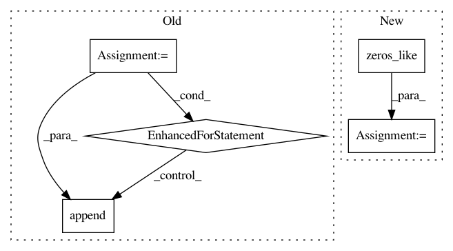

4580d28f9cc8f846ee6fb42dda6909a98797fcd9,nara_wpe/tf_wpe.py,,perform_filter_operation,#Any#Any#Any#Any#,166
Before Change
// TODO: Second loop can be removed with using segment_axis. No large gain.
reverb_tail = list()
for tau_minus_delay in range(0, K):
reverb_tail.append(tf.einsum(
"de,dt",
filter_matrix_conj[tau_minus_delay, :, :],
Y[:, (K - 1 - tau_minus_delay):(T - delay - tau_minus_delay)]
))
reverb_tail = tf.add_n(reverb_tail)
return tf.concat(
[Y[:, :(delay + K - 1)],
Y[:, (delay + K - 1):] - reverb_tail], axis=-1)
After Change
filter_matrix_conj[tau_minus_delay, :, :],
Y[:, (K - 1 - tau_minus_delay):(T - delay - tau_minus_delay)]
)
reverb_tail = tf.foldl(
add_tap, tf.range(0, K),
initializer=tf.zeros_like(Y[:, (delay + K - 1):])
)
return tf.concat(
[Y[:, :(delay + K - 1)],
Y[:, (delay + K - 1):] - reverb_tail], axis=-1)
In pattern: SUPERPATTERN
Frequency: 3
Non-data size: 5
Instances
Project Name: fgnt/nara_wpe
Commit Name: 4580d28f9cc8f846ee6fb42dda6909a98797fcd9
Time: 2018-05-16
Author: heymann@nt.upb.de
File Name: nara_wpe/tf_wpe.py
Class Name:
Method Name: perform_filter_operation
Project Name: tensorflow/models
Commit Name: 6ce86cd84f0a4f7d8cf60124ef13d22a907f025e
Time: 2018-05-07
Author: mironov@google.com
File Name: research/differential_privacy/privacy_accountant/python/rdp_accountant_test.py
Class Name: TestGaussianMoments
Method Name: test_compute_privacy_loss
Project Name: HyperGAN/HyperGAN
Commit Name: 677fff891b0975c04e279b688d2d1302ac8094cf
Time: 2019-08-22
Author: mikkel@255bits.com
File Name: hypergan/optimizers/experimental/negative_momentum_optimizer.py
Class Name: NegativeMomentumOptimizer
Method Name: apply_gradients